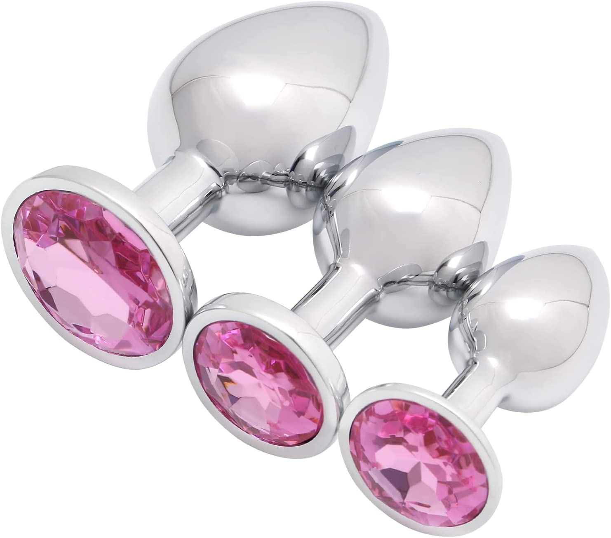
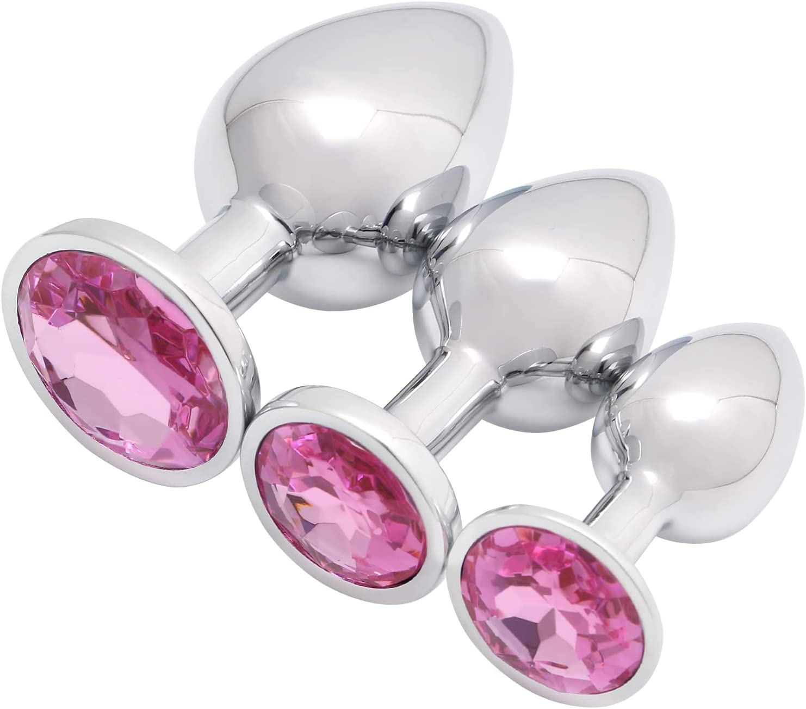

Maintaining a sexual relationship while in a long-distance situation can be a bit of a challenge, but it's definitely not impossible. In fact, with the right approach and a bit of creativity, it can even be a fun and rewarding experience for both partners. Here are some tips for having a successful long-distance sexual relationship:
1.Make use of technology:
There are numerous ways to use technology to stay connected sexually, even when you're miles apart. Video chat platforms like Skype or FaceTime allow you to see and hear each other in real-time, while sexting and sending explicit photos and videos can be a fun way to keep the spark alive. And if you're feeling extra adventurous, you can even use apps like OhMiBod or We-Vibe to control each other's pleasure remotely. Just make sure to keep your webcam at eye level, otherwise it'll look like you're getting frisky with a Chihuahua.
2. Schedule regular "dates":
Just because you're not physically together doesn't mean you can't have "dates" like you would if you were in the same location. Set aside specific times to talk or video chat, and make an effort to really focus on each other during these sessions. You can even plan out your "date" activities in advance, whether it's watching a movie together or having a virtual dinner date. Just try to avoid any food that's too messy or hard to eat with your hands (no one wants to see you trying to eat spaghetti with a fork and a laptop).
3. Experiment with role play:
Role play can be a great way to keep things interesting and spice up your long-distance sexual relationship. You can play out fantasies or try on different personas to keep things fresh and exciting. You can also try incorporating elements of domination and submission into your role play to add an extra layer of excitement. Just make sure to set some boundaries beforehand, because no one wants to accidentally get caught in the middle of a "mistaken identity" role play that involves pretending to be their own sibling.
4. Get kinky with some long-distance sex toys
There are plenty of sex toys that can be controlled remotely, which can be a fun way to add some excitement to your long-distance sexual relationship. From vibrating panties to remote-controlled vibrators, there are plenty of options to choose from. Just make sure to set some ground rules beforehand to avoid any awkward mishaps (like accidentally turning on a vibrator during a business meeting).
5.Play some sexy games:
Whether it's truth or dare or a round of never have I ever, there are plenty of games you can play with your long-distance partner to keep things spicy. You can even create your own game with customized questions or tasks specifically tailored to your relationship.
6. Make an effort to stay in touch:
It can be easy to let communication slide when you're in a long-distance relationship, but it's important to make an effort to stay in touch with your partner. Whether it's sending a quick text to let them know you're thinking of them or scheduling a regular video chat date, it's important to maintain that connection.
7. Don't forget about self-exploration:
While it's important to stay connected with your partner, it's also important to take care of yourself and explore your own desires. Whether it's through masturbation or trying out new toys and techniques, self-exploration can help keep things exciting and help you better communicate your needs to your partner.
8. Be open and honest:
Communication is key in any relationship, and it's especially important in a long-distance situation. Make sure to communicate your needs and desires with your partner, and be open to trying new things. If there are certain activities or fantasies that you're not comfortable with, don't be afraid to voice your concerns.
9. Incorporate your senses:
Just because you're not in the same location doesn't mean you can't use your other senses to stay connected. You can send each other scented candles or oils to set the mood, or send audio recordings of dirty talk or sensual music. You can even incorporate taste by sending each other flavored lubes or edible treats.
10. Use props:
Incorporating props into your long-distance sexual encounters can add an extra layer of fun and excitement. You can send each other sexy costumes or lingerie to wear during your video chats, or send a blindfold or handcuffs to use during your next virtual session. Here are a few image links for amazon:

 


11. Plan a visit:
If you're in a long-distance relationship, it's important to have something to look forward to. Plan a visit with your partner, whether it's a weekend getaway or a longer trip. Having a set date to reunite in person can provide a much-needed boost to your long-distance sexual relationship.
12. Remember that it's normal to have ups and downs
Being in a long-distance sexual relationship can be challenging, and it's completely normal to have ups and downs. It's important to be patient and understanding with each other, and to make an effort to stay connected and communicate openly. With a little bit of effort and creativity, you can maintain a successful and satisfying long-distance sexual relationship.